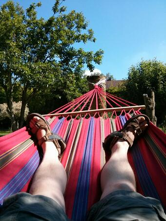

At Home with the Drogulus
Two nuggets of information:
- A recent post on the Hacker News website showed me that people appear to be interested in and intrigued by my drogulus project. Apparently, I'm not the only one to find the prospect of a programmable peer-to-peer data store designed to promote autonomy fascinating.
- It's the school holidays and from next weekend Mary and the kids will be away visiting relatives in Scotland for a fortnight. I, however, need to earn money so will continue to work and stay at my new home alone. I will miss them terribly.
I'll have the middle weekend of the fortnight free from "dad duties" - an opportunity I can use to work on the drogulus. I'll also be in an empty house missing my wife and kids, so why not make it an open house and invite interested friends to hack on the drogulus too?
Over the weekend I'd like to create a first draft of a formal specification for Logos, the Lisp-like programming language used to program the drogulus. I have plenty of ideas but, due to the peer to peer nature of the drogulus, the language will need some interesting features and constraints. To be clear, the goal for the weekend is a worked out specification for rather than implementation of Logos. I expect much of the weekend will be taken up with discussion of language design and writing example Logos code.
Logos needs to be:
- Simple enough that a ten year old child could write software with it.
- Powerful enough to be useful to professional programmers.
- Reliable enough that it can function usefully in a peer to peer context.
- Safe enough that it's impossible to overwhelm the available computing power of peers on the network.
If creating such a Lisp like programming language sounds interesting (and I realise you really do have to be a very special kind of person to think so) then from the evening of Friday 26th July until the late afternoon of Sunday 28th July my house is the place to be. As they say, "be there, or be square" (actually, you probably need to be pretty damn square in order to want to come anyway). I'll try to get my current thoughts on Logos written down soon - probably as a brain dump on this blog. As always constructive comments, suggestions and critique will always be welcome.
Not everyone wants to spend all weekend inventing Lisp-y programming languages so I'd welcome "day trip" guests too.
How will the weekend work?
- I need to know you already.
- No more than a handful of people can stay over each evening (and you'll need to bring a sleeping bag). I can accommodate more people who are visiting just for the day.
- I'll provide food and drink - there's a Domino's franchise in Towcester ;-). There are good pubs in Towcester that we may want to visit, but I can only afford to pay for food and drink consumed at my house.
- I don't mind picking up / dropping off at Milton Keynes train station.
- You need to be a programmer of an appropriate level of expertise given what we'll be working on (I trust you to be the judge of that).
- You've read and agree with the drogulus contributor's agreement.
Did I mention I have a nice garden to enjoy at my new house and I'm a big fan of hammock driven development..?

If you're interested in coming over, drop me an email and we can work out the details. If you have any questions, please don't hesitate to get in touch.